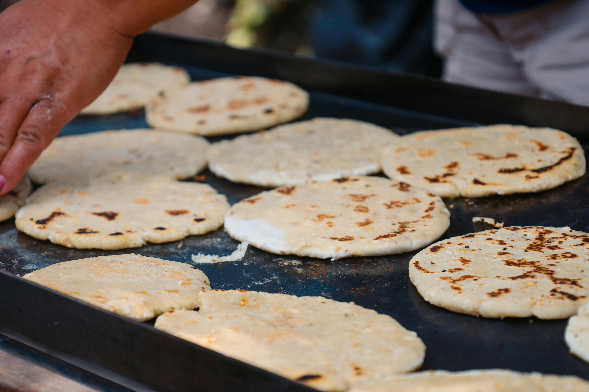

PUPUSAS
Home

Pupusas
Pupusas from El Salvador
- Maseca
- Chicharron
- Tomatoes
- Pepper
- Onions
- Pupusa Cheese
Steps:
- Chop the onions and tomatoes
- Blend the chopped tomatoes and onions to make the sauce
- Add water to the Maseca to create the pupusas dough
- Smach the chicharrones on a bag and add a little bit of water to create a dough like mix
- Take the dough and the smashed chicharrones, put a little of chicharrones inside the dough ball and add some cheese
- Grill them slowly at mid flame until they get a gold colour
- Enjoy!